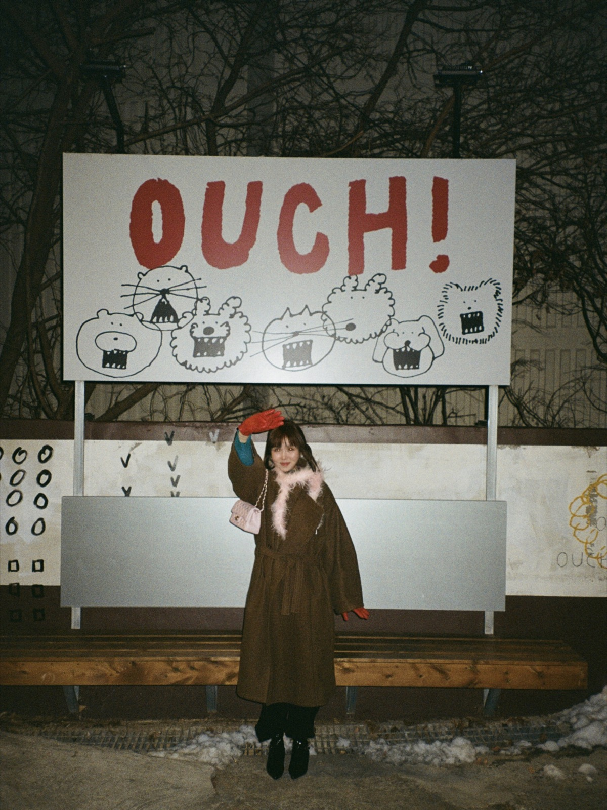

Focus
Brand building · Customer experience · Consumer insight · Visual storytelling · Digital commerce
About / Audris Li

From the first visual impression to the relationship that develops after a purchase.
My background brings together postgraduate study at London College of Fashion, undergraduate study at Winchester School of Art, independent customer research and the hands-on experience of building Cyta, my sustainable incense brand.
That mix has taught me to move comfortably between strategy and making: I can explore the bigger question, listen closely to customers, and turn what I learn into something practical and visually coherent.
I don’t see research and creativity as separate stages. Research helps me notice what matters; visual thinking helps me make those insights tangible.
Focus
Brand building · Customer experience · Consumer insight · Visual storytelling · Digital commerce
Education
MA Global Fashion Retailing
London College of Fashion, UAL
BA (Hons) Fashion Marketing with Management
Winchester School of Art, University of Southampton
Languages
English, Mandarin and Cantonese — fluent
French and Japanese — basic